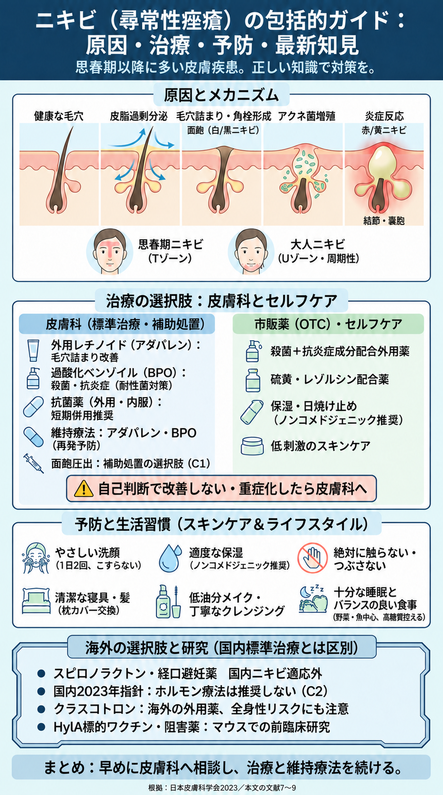

ニキビ（尋常性痤瘡）：図解
画像の小さな文字は原寸PNGを開いて拡大してください。
文字による補足
国内標準治療はアダパレン・BPOを軸とし、抗菌薬は短期併用。面皰圧出はC1の補助的な選択肢です。青色光・PDTはCQ17、痤瘡・痤瘡瘢痕のレーザーはCQ42でC2（推奨しない）であり、標準治療と同列に扱いません。スピロノラクトン・経口避妊薬のニキビ使用は国内適応外で、国内2023年指針ではC2（推奨しない）。クラスコトロンの全身性リスクにも注意。HylA標的治療はマウスでの前臨床研究です。
図1
ニキビの病態、国内標準治療、海外の選択肢と前臨床研究を区別した訂正版です。

根拠と説明
各主張の対象・限界・原典は記事の参考文献と本文を参照してください。図だけで薬剤の開始・変更を判断せず主治医へ相談してください。